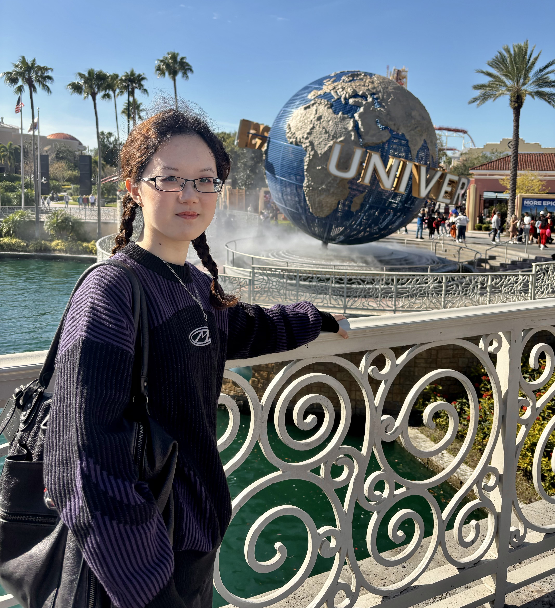
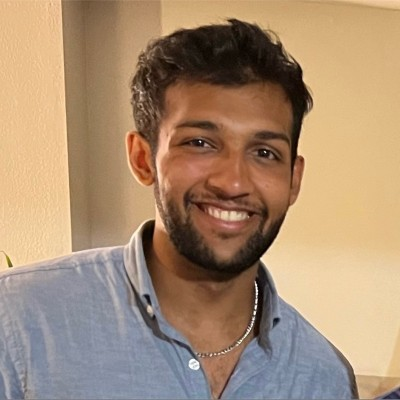
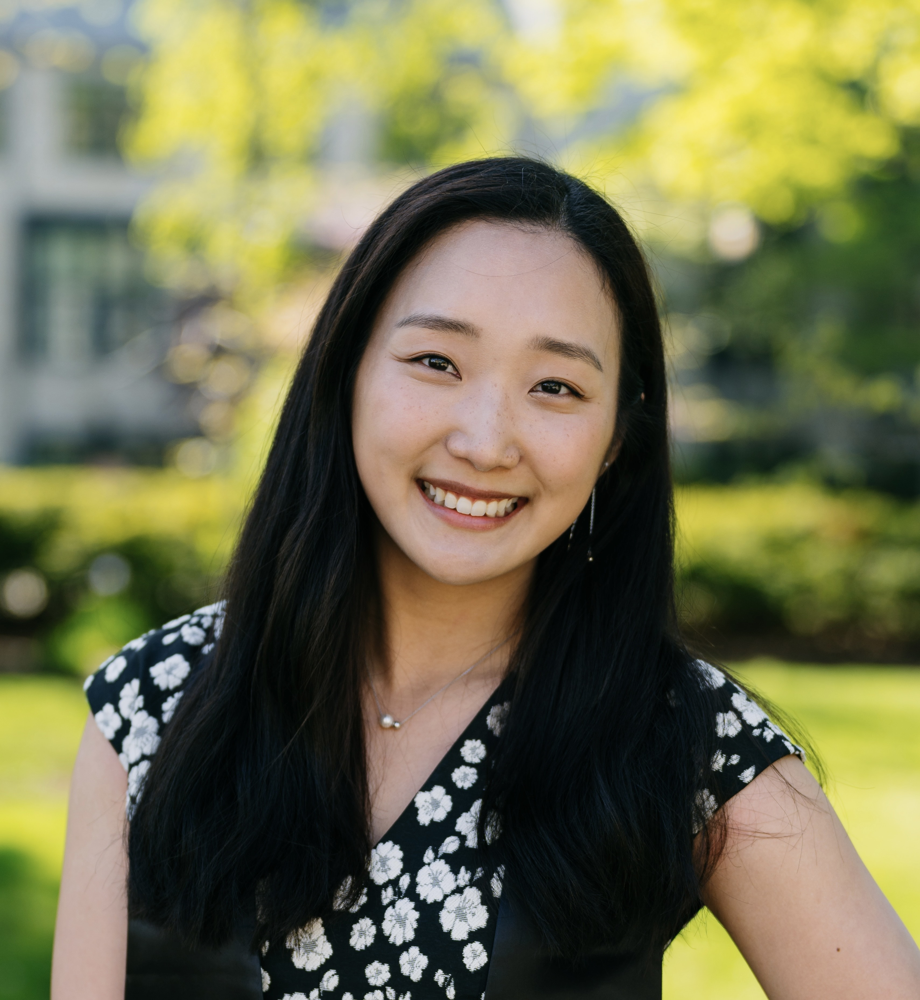
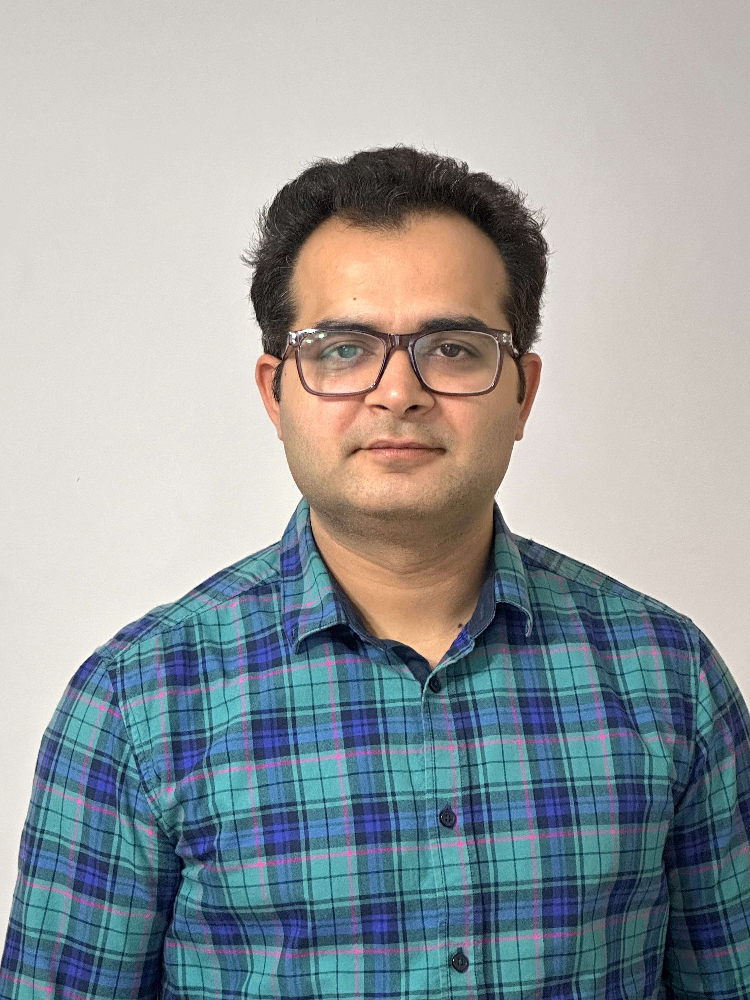
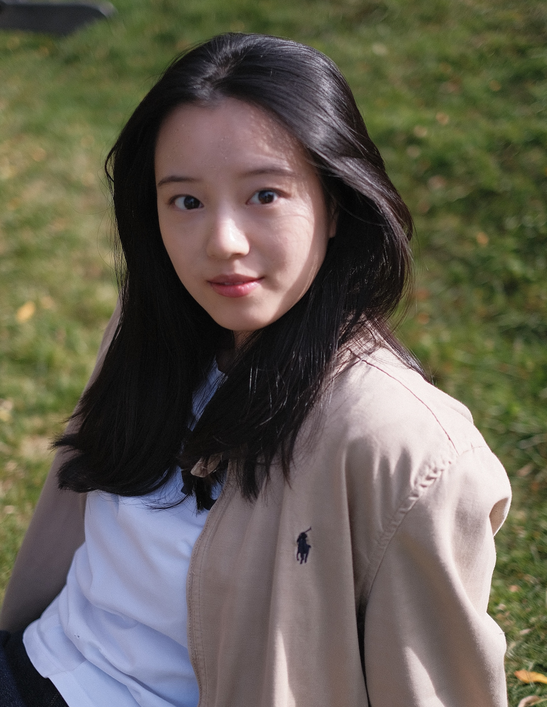
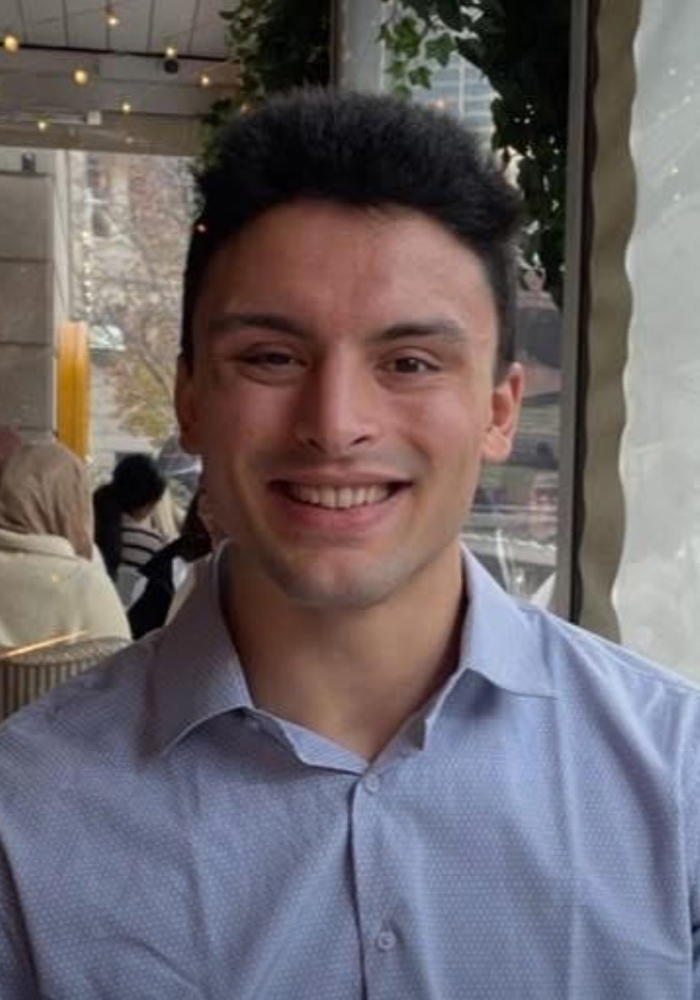
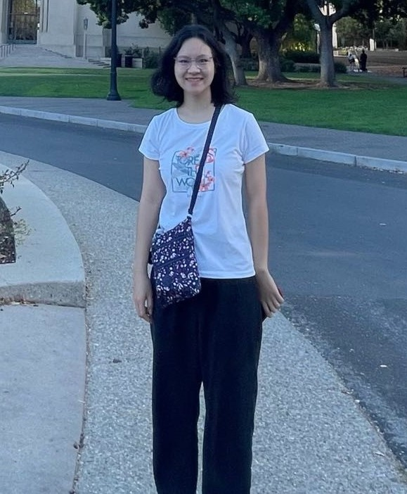
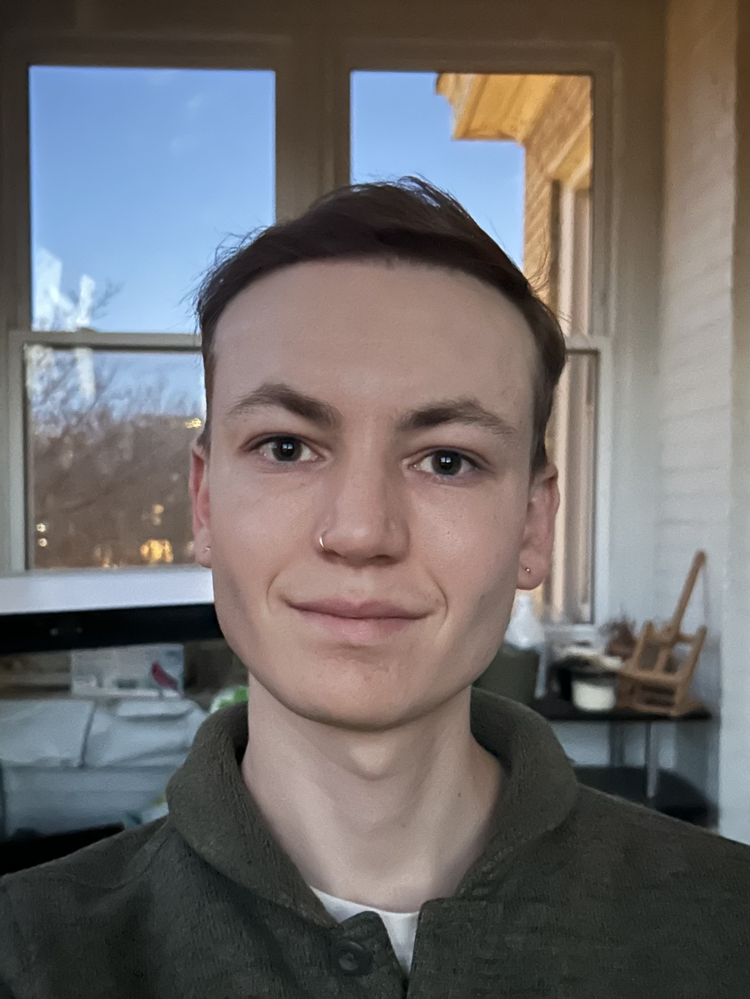
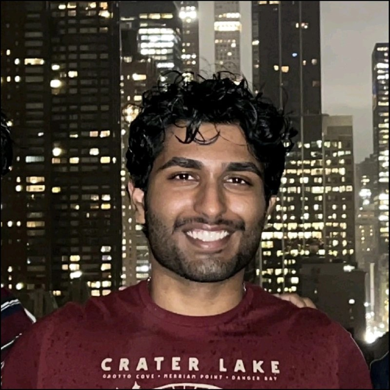

Meet our team mentors
Meet our talented team mentors! They will be mentoring the participant teams competing in the event.

Mary Wu
MS Student in Statistics & Data Science, Northwestern University
Mary graduated from New York University in 2024 with a joint major in Economics & Mathematics and a minor in Music. Mary has research experience across economics, business, and statistics - most recently focusing on the impact of AI on corporate decision-making (particularly in the context of foreign expansion) as well as Bayesian statistics. Mary is experienced with data manipulation in Python, R, and SQL, and is passionate about turning data into meaningful stories that drive real-life impact. She especially hopes to support underrepresented students and those new to data analysis, and aims to be a resource for anyone navigating grad school, internships, and research.

Akash Rathi
MRI data analyst, Northwestern University
Akash received his Bachelor’s degree in Data Science from Northwestern University in 2023. He has a strong interest in medical machine learning - specifically, models that can detect various forms of brain cancer. After his undergraduate studies, he spent one year at the University of California, Los Angeles conducting research to improve gait in patients with Parkinson’s Disease. In addition, he developed neural networks to detect epilepsy from non-seizure EEG data. He is applying to medical school this summer. His mentoring style is very hands-on. He believes developing a strong team dynamic and morale is crucial to any project - especially, those that are time-sensitive. He looks forward to getting to know the teams on a personal level, and maintaining strong communication from the start.

Cathy Kim
Business Analyst, Capital One
Cathy received her Bachelor’s degree in Statistics and Data Science from Northwestern University in 2024. She has a strong interest in financial technology and currently works as an analyst on Capital One’s Fraud Models team. Her focus is on identifying new features that will improve fraud detection while reducing false positives. Cathy is experienced in working with data using Python and SQL, as well as data visualization in RStudio. Through her full time roles and internships, she’s had the chance to learn about different areas of the financial technology industry, ranging from trading and product engagement to fraud models. Cathy is interested in the intersection of data and finance and hopes to be a resource for students who are interested in this field. Her mentoring style places strong emphasis on developing a clear analysis plan and truly understanding the core problem that the team is tackling. She also values playing to each team member’s strengths, believing that this not only leads to the team’s success but also creates opportunities for everyone to learn from each other.

Dr. Raman Khurana
LLM/ML Researcher & Lecturer, Northwestern University
(Judge & Mentor)
Dr. Raman Khurana is a Postdoctoral Researcher at the Center for Deep Learning and a Lecturer in the MS in Machine Learning & Data Science program at Northwestern University. With a PhD in Physics and over 15 years of experience working with large-scale data, he brings a unique blend of scientific rigor and AI innovation to his work. At CERN, he contributed to the Nobel Prize-winning discovery of the Higgs boson. His current research focuses on time series forecasting, automated feature engineering for streaming data, and generative AI.
Raman builds agentic AI systems using open-source small- and medium-sized models and explores methods to apply them to real-world business problems. Drawing on his physics background, he developed a physics-inspired feature generator that models time series data as a flowing river. He finds joy in exploring numbers and algorithms but finds it even more rewarding to share those experiences with fellow data scientists in industry and the next generation of data professionals in the MS in Machine Learning & Data Science program. For Raman, the true excitement lies not just in solving complex problems, but in making those insights accessible, collaborative, and impactful.

Yuqing Yang
First year PhD student, Northwestern University
Yuqing has a strong interest in interdisciplinary research at the intersection of AI, social sciences, and astronomy. Yuqing has developed NLP algorithms to detect video recompilation behavior, contributing to the understanding of how online privacy regulations impact content quality. Currently, Yuqing is focused on AI in astronomy, working to improve machine learning techniques for supernova classification. Her mentoring style is supportive and collaborative, emphasizing an engaging, rewarding, and approachable learning experience.

Kyle Williams
Software Engineer, Lakeview Investment Group
Kyle earned his BS in Computer Science with a Minor in Data Science in June 2023, followed by an MS in Computer Science in June 2024. Kyle has always been drawn to Machine Learning and Data Analysis. Being able to understand and communicate about data makes him feel powerful and responsible. While he took a majority of his courseload in the CS Department, it is the application of math, statistics, and science through code that is the most interesting to me.
As a part of his master’s, Kyle completed a Thesis on LLMs (Large Language Models), where he augmented the attention mechanism to use Euclidean distance instead of dot-product to improve the performance of small models on OpenBookQA by 14%. Currently, Kyle is helping build high-speed, real-time dashboards and trading systems to display important statistics and execute orders when certain triggers are reached.
Kyle’s greatest strength as a mentor is his patience. As a triplet, Kyle had to share everything – even a birthday – and it’s made him a great listener, effective mediator and strong communicator. Kyle loves talking about code, and he hopes to be a resource for any student who wants to learn more about what it means to be a Computer Scientist in industry. Outside of tech, Kyle’s also a big fan of wrestling and football—and always happy to connect over either!

Xinhui Qian
MS Student in Statistics & Data Science, Northwestern University
With a strong background in data science and statistical modeling, Xinhui has experience working on projects involving machine learning, causal inference, and data visualization. Xinhui has applied techniques such as deep learning, machine learning, Monte Carlo simulations, and regression analysis to solve real-world problems across finance, healthcare, and industrial processes.
Her technical skills include Python, SQL and R. As a mentor, Xinhui enjoys guiding students through the problem-solving process, helping them break down complex data science tasks, and strengthening their ability to draw meaningful insights from data. She focuses on building a collaborative and encouraging environment for teams to thrive.
Tuan Quach
Senior Associate, Software engineer, Capital One
(Judge & Mentor)
Tuan graduated from University of Maryland in 2019 with a major in Computer Science and Mathematics. At Capital One, he does most of his work in Site Reliability Engineering, where he primarily works with large traffic data, focusing on managing large-scale traffic operation. His work involves building robust pipelines, deep dive into observability data for Mobile and Web to extract meaningful insights to preventing outage, decision-making, alerting systems. He has a strong interest in leveraging Generative AI to Change Banking for Good. Tuan’s mentoring style is very interactive. He has previously taught elementary and middle school students coding and is part of CodePath where he prepared College Students for interviews.

Zihan Zhao
MS Student in Statistics & Data Science, Northwestern University
Zihan is well-aquainted with data visualization, exploratory data analysis, and statistical modeling. She has worked as a home tutor, teaching maths and physics to high school students. She helped them develop effective learning strategies and a better understanding of concepts. Zihan is an active listener who provides immediate feedback and supports students with patience and attention to detail. She takes her responsibilities seriously and is committed to guiding students in discovering solutions through exploration. With coursework in psychology, Zihan also prioritizes their overall well-being, ensuring they feel both supported and motivated throughout the learning process. This approach allows her to be not just a tutor, but a mentor who fosters both academic growth and personal confidence.
David Frost
Software engineer, Capital One
David is a software engineer at Capital One where he works on site reliability engineering (SRE) and DevOps for the company’s web and mobile apps, optimizing the digital experience for 40 million customers. He graduated with an MS and BS in computer science and artificial intelligence in 2024 from Case Western Reserve University (CWRU) in Cleveland, OH. He previously interned at Capital One in Chicago and worked as a teaching assistant and research assistant in machine learning and algorithms at CWRU. David served CWRU’s Association for Computing Machinery student chapter as President where he co-led the creation of a student-run AI conference for which he also hosted a panel discussion with local experts. David volunteers weekly to teach middle school students coding and is passionate about learning more about Generative AI and data science in his free time. His previous projects involve probabilistic graphical models (PGMs), high performance AI acceleration, classical AI, and retrieval-augmented generation (RAG).

Tyler Maule
Data Strategist, Chicago Public Schools
Tyler received an MS in Statistics and Data Science from Northwestern University in 2022. With an underlying interest in the social sciences and public policy, his work builds on statistical experimentation, analyses of behavior, and data storytelling to drive change. From optimizing marketing pipelines in Silicon Valley tech to training education researchers at NU, they balance technical work—creating data pipelines, visualization tools, and predictive models (typically with Python and SQL)—and partnering with leaders to shape strategy. As a Data Strategist at Chicago Public Schools, Tyler develops indicators, data systems, and reporting to advance student success, identifying and communicating inflection points where policymakers can better support schools.
For Tyler, one of the most rewarding parts of data work is teaching and learning from others; whether as a tutor, TA, or consultant, he loves supporting others in their data journeys. Tyler’s mentoring style centers collaborative problem solving, active listening, and engaging with students’ motivation to grow together. Outside of learning new analytics techniques, they enjoy biking, camping, and live music.

Adamya Prakash Srivastava
Quantitative Trader, Jump Trading
Adamya received a bachelors degree in Computer Science, Statistics, Economics, and Data Science from UC Berkeley in 2023. Since, he has worked as a quant for a high frequency trading firm where he specializes in algorithmically trading US markets. He uses many types of data science tools every day to create and iterate on trading strategies built on multiple sources of market data. Data science is used at every step of quantitative trading, from prototyping trading ideas, measuring market behavior, designing price predictions, analyzing trading performance, and diagnosing under-performance. Day to day tools include python, SQL, LLMs, python data science libraries, visualization software, and C++.
His mentorship style is example-driven and visual, having previously TA’d data science undergrad classes as well as teaching courses in poker theory and quantitative trading analysis.